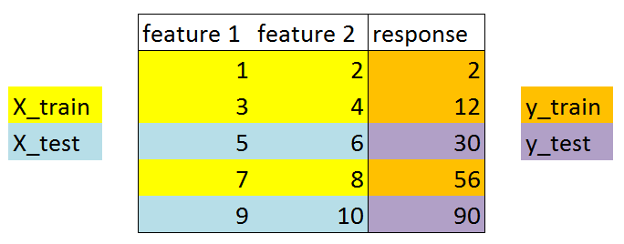
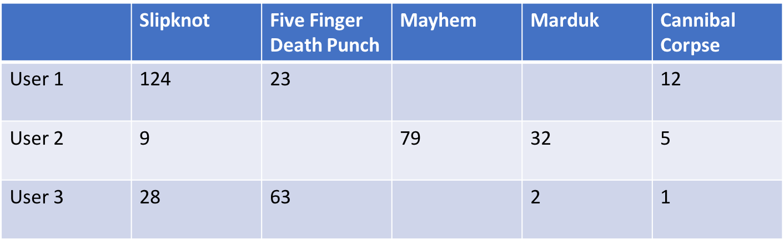
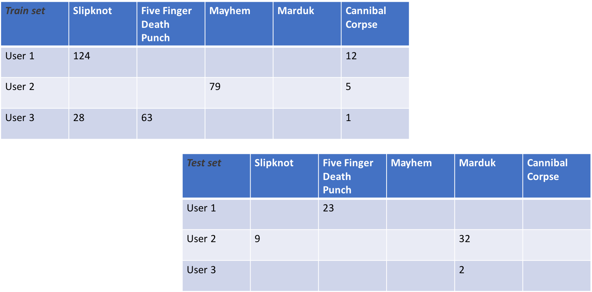

3. Train/test splits¶
As with all machine learning techniques, data splitting is recommended (pun!) when fitting recommender systems. However, unlike most other machine learning domains, the train/test split for collaborative filtering does not simply sample rows for training.
Since most collaborative filtering techniques estimate factors or neighbors for both users as well as items, the number of samples in the matrix is as important a consideration as that of the matrix rank. Therefore, both the number of samples as well as the dimensionality of the training and test data must match that of the input data.
3.1. Conventional splitting¶
Most data can be randomly split, or split with stratification. A typical train/test split resembles the following:
{kind=link}
Here’s how we’d do that in Python:
from sklearn.datasets import load_iris
from sklearn.model_selection import train_test_split
X, y = load_iris(return_X_y=True)
X_train, X_test, y_train, y_test = \
train_test_split(X, y, test_size=0.2, random_state=42)
This is due to the fact that most machine learning algorithms only depend on consistency of matrix rank, and operate invariant to the number of samples in the matrix.
Collaborative filtering is not quite the same
3.2. Splitting for collaborative filtering¶
In (most) collaborative filtering, we have to ensure that the train set contains ratings events for all items and users present in the data. This is because matrix factorization techniques are going to decompose factors for both users (rows), as well as items (columns). Therefore, a collaborative split can be considered more like data masking, where the training set represents a system’s collection of item ratings at a point in time, and the test set represents the next items the user rated.
As an (obviously contrived) example, given the following input data of users’ listens to various metal artists (each of which is worth checking out!):
{kind=link}
We may split the data into a train/test set that resembles the following:
{kind=link}
Obviously, we’d hope the input data had more than 11 ratings events!
Here’s how we can achieve such a split in reclab:
from reclab.model_selection import train_test_split
from reclab.datasets import load_lastfm
import numpy as np
lastfm = load_lastfm(cache=True, as_sparse=True)
train, test = train_test_split(lastfm, random_state=42,
train_size=0.8)
# We can assert that the shape remains the same, even though the number of
# non-zero elements in the sparse matrix is different
n_users, n_artists = train.shape # 1892, 17632
assert n_users == lastfm.shape[0]
assert n_artists == lastfm.shape[1]
# Show the nnz is different:
assert train.nnz != test.nnz and \
train.nnz != lastfm.nnz and \
test.nnz != lastfm.nnz
3.3. Other nuances¶
One of the first things you’ll notice after splitting your data with reclab is that the test set is not smaller than the training set. In fact, the test set contains all of the data! This is due to the fact that recommender systems are not truly supervised learning techniques; they are information retrieval methods.
The purpose of the test set during scoring is often to determine whether the recommendations produced by the algorithm actually ended up being consumed/rated positively by the user. Therefore, the test set can be considered a future state of the users’ ratings, while the training set can be thought of as a past state. As a result, the scoring techniques we use for recommenders fall more into the family of information retrieval and relevancy (think search engine metrics) than conventional “accuracy” measures.
3.4. Exceptions¶
There are situations where a conventional train/test split could work for you:
- You don’t care about user factors (in which case, you could use the
recalculate_useroption when producing recommendations for users who didn’t exist at the time of model fit, and a new test matrix that contains the new user(s)) - You are not using a matrix factorization or user-based method (i.e., cosine similarity between items)
However, since reclab uses sparse matrices, you’ll likely have to perform your own train/test split on a dense matrix and make it sparse prior to fitting any of the algorithms.